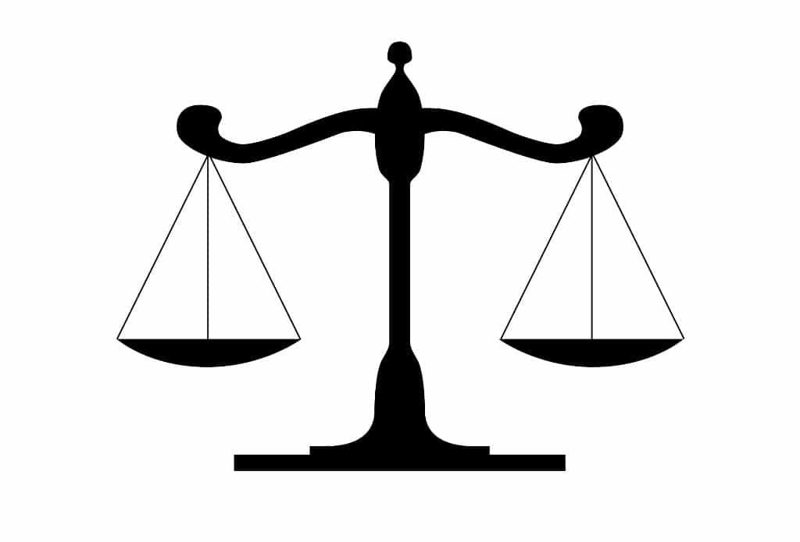
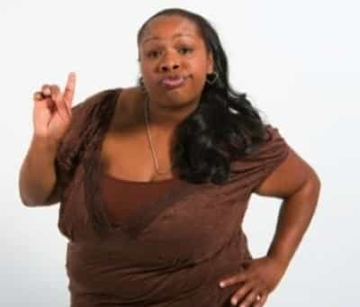

TB is a Psychology grad, observer of society, aspiring rental housing magnate. Currently trying to organize a protest to protest protests and advocate for men kicking ass and then taking names.


Equality is a strange thing to ask for. Since when do feminists and hard-headed modern women want to be so similar to men?
If I were a woman, it would be easy to acknowledge that I am different from a man and would embrace that. As a man, I embrace being different than a woman. Similarly, I too embrace a woman as being different than a man—that’s the part I enjoy most about them! Men appreciate things like the hips of women or their soft voice, and women are attracted to things like the 5 o’clock shadow of a man, his deep voice, or his confidence. It’s unique to each gender. So why do women want equality?

Men have a standard of living that they’ve cultivated, and have steered civilizations for thousands of years. It’s safe to say, men have what they want. They have created the jobs they are good at, they have negotiated salaries that they are comfortable with receiving, and have basically set a standard for themselves in most fields.
That standard is arbitrary, however. It’s floating in mid air. It is not a law of the universe. It is choices that men have made and (mostly) agree upon. So now we have these standards that men have set and now live with, and women want equality (the same).
If a woman wants the same standards as a man, she wants to be an awful lot like a man. Otherwise, she would have her own standards and desires that she has created. If a woman is unique and different (which is obvious), she should want different things than a man. She should want a different standard. Not necessarily less of a standard of life, just different.

Sometimes I open up my Tinder and see women flexing their muscles or putting in their bio that they are picky and “more sarcastic than you,” or similar boastful, egoic lines. It makes me roll my eyes so much it hurts. If I was attracted to ego, I’d date men.
You will see men everywhere posturing as being the “best” or the rulers of the universe and it is just ego stuff. That’s our thing! Ego is the domain of men, though we’re not entirely proud of it. The thirst for excellence is ego driven. We’re seeing more and more women sporting massive egos, and the ego is NOT a good look for women.
Now we have a culture of domineering and ego-driven women trying to be the king of ego mountain. The ego is ours. Ego mountain is ours. We have always had it the real men of us won’t give it up. This power struggle going on is counterintuitive to natural feminine energy—the attractive force that brings men and women together instead of butting heads. This could have an association with the decline in birth rates in Canada that we are seeing.
Instead of women marching around society, fighting to have the job, the income, the attitude, and the gym muscles of a man, wouldn’t it be more fitting to seek different standards, different desires? After all, men often seek excellence. We seek to have the biggest muscles, the biggest income, the most admirers, etc.
Women yearning to be quality caretakers, writers, actresses, partners, mothers, students, emotional supports, and many similar honourable duties is far more befitting for them than becoming, say, a firefighter out of spite to prove to the world she can do it (stinking of ego). Meanwhile, the station has to also hire an extra firefighter to make up for her physical accommodations, thus negating the need for her.
This is really a message to all: do what you are naturally good at doing and if it happens to pay more or less, live with it… or change yourself. If someone earns more than you, it’s foolish to expect the same. They are producing different work than you because their skill set is different and possibly more valuable. If you want all the same things as this person, you are trying to be too much like them. Be original and carve out your own desires and standards.
Women: you are different. Not better and not worse, just different.
Read More: Modern Woman In Wanting To Be For Herself, Has Destroyed Herself